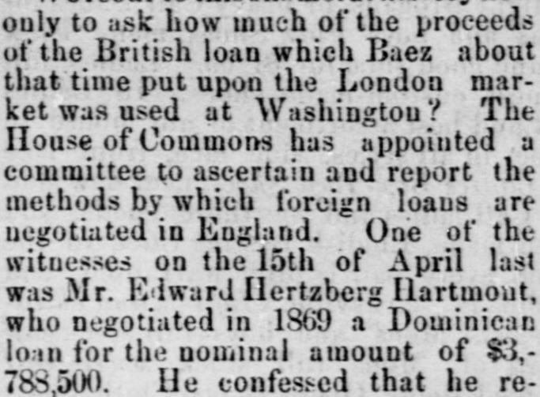
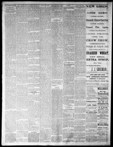

Of this the Government of San Domingo received only $230,000De esto, el Gobierno de San Domingo recibió solamente $230,000
Clarksville Weekly Chronicle. Clarksville, Tenn., May 15, 1875. Page 2. View the originalVer el original


See the full pageVer la página completaAccording to the Clarksville Weekly Chronicle, a British House of Commons committee investigated the negotiation of foreign loans in England, hearing testimony from Mr. Edward Hertzberg Hartmont regarding a Dominican loan nominally valued at $3,788,500. Hartmont testified that he received only $1,800,415 in cash—of which the San Domingo government received merely $230,000—with the remainder spent on arms in Berlin and disbursed in Washington, where Hartmont was sent to work for annexation. The newspaper questions whether the unaccounted-for funds were paid to General Grant's military favorites, such as Babcock, who became suddenly prosperous and invested in real estate, and suggests that the next Congress should investigate the matter.Según el Clarksville Weekly Chronicle, un comité de la Cámara de los Comunes británica investigó la negociación de empréstitos extranjeros en Inglaterra y tomó declaración al Sr. Edward Hertzberg Hartmont acerca de un préstamo dominicano con un valor nominal de 3.788.500 dólares. Hartmont declaró haber recibido únicamente 1.800.415 dólares en efectivo —de los cuales el gobierno de Santo Domingo recibió tan solo 230.000 dólares—, destinándose el resto a la compra de armas en Berlín y a desembolsos en Washington, a donde Hartmont fue enviado para gestionar la anexión. El diario cuestiona si los fondos no rendidos fueron pagados a los militares predilectos del general Grant, tales como Babcock, quien se enriqueció repentinamente e invirtió en bienes raíces, y sugiere que el próximo Congreso debería investigar el asunto.
FULL TEXT:TEXTO COMPLETO:
SAN DOMINGO.SANTO DOMINGO.
The Facts About the Annexation Job Coming to Light—Disgraceful Revelations Before a House of Commons Committee.Los hechos acerca del trabajo de la anexión salen a la luz—Revelaciones vergonzosas ante un Comité de la Cámara de los Comunes.
New York Sun.New York Sun.
The boldest and by odds the most infamous scheme of pillage organized under the first administration of Grant was that for the annexation of San Domingo. It was in its very inception lawless and cruel and base beyond any-thing in the history of the Western world, since Cortez and Pizarro. Baez had usurped the Presidency of San Domingo without a decent pretext of an election; and finding that his barbarous murders, confiscations and treasons would be borne no longer, he deliberately determined to sell the country and divide the price with his accomplices. These were the camp followers and personal intimates of the two Presidents, Grant and Baez.El plan de pillaje más audaz y con diferencia el más infame organizado bajo la primera administración de Grant fue el de la anexión de Santo Domingo. Fue en su misma concepción ilegal y cruel y bajo más allá de cualquier cosa en la historia del mundo occidental, desde Cortés y Pizarro. Báez había usurpado la Presidencia de Santo Domingo sin un pretexto decente de elección; y encontrando que sus bárbaros asesinatos, confiscaciones y traiciones ya no serían tolerados, determinó deliberadamente vender el país y dividir el precio con sus cómplices. Estos eran los seguidores de campamento e íntimos personales de los dos Presidentes, Grant y Báez.
Grant's dependents, Babcock, Porter, Ingalls, and the rest, were to have spoils so rich and tempting that Grant actually stipulated in terms to lobby the scheme through Congress. But Baez in the meantime was in evil ease. He frankly declared that he had no popular strength in the country he had proposed to sell, and that he could not hold out long enough to consummate the sale without extraordinary aid of money, and a fleet from the United States. Thereupon Grant ran his hand into the Treasury and seized certain unappropriated moneys for the use of Baez, and sent them down by Babcock, with a fleet large enough to keep this savage wretch in power until the temper of the American Congress could be tried.Los dependientes de Grant, Babcock, Porter, Ingalls, y el resto, habían de tener despojos tan ricos y tentadores que Grant en realidad estipuló en términos cabildear el plan a través del Congreso. Pero Báez mientras tanto estaba en una mala facilidad. Declaró francamente que no tenía fuerza popular en el país que se había propuesto vender, y que no podría resistir el tiempo suficiente para consumar la venta sin ayuda extraordinaria de dinero, y una flota de los Estados Unidos. Entonces Grant metió su mano en la Hacienda y se apoderó de ciertos fondos no asignados para el uso de Báez, y los envió abajo por medio de Babcock, con una flota lo bastante grande para mantener a este salvaje miserable en el poder hasta que el temperamento del Congreso estadounidense pudiera ser probado.
We recur to this shameful history now only to ask how much of the proceeds of the British loan which Baez about that time put upon the London market was used at Washington? The House of Commons has appointed a committee to ascertain and report the methods by which foreign loans are negotiated in England. One of the witnesses on the 15th of April last was Mr. Edward Hertzberg Hartmont, who negotiated in 1869 a Dominican loan for the nominal amount of $3,788,500. He confessed that he received in cash only $1,860,445. Of this the Government of San Domingo received only $250,000, and the remainder was expended in England and the United States.Recurrimos a esta vergonzosa historia ahora solo para preguntar cuánto de los ingresos del empréstito británico que Báez en ese momento puso en el mercado de Londres fue usado en Washington. La Cámara de los Comunes ha nombrado un comité para averiguar e informar los métodos por los cuales los préstamos extranjeros son negociados en Inglaterra. Uno de los testigos el 15 de abril pasado fue el Sr. Edward Hertzberg Hartmont, quien negoció en 1869 un empréstito dominicano por la cantidad nominal de $3,788,500. Confesó que recibió en efectivo solo $1,860,445. De esto el Gobierno de Santo Domingo recibió solo $250,000, y el resto fue gastado en Inglaterra y los Estados Unidos.
Hartmont was sent to Washington to work for annexation, where he testifies a large amount of the money was expended. Who got it? For his loan of $3,788,500, Harmont received in cash $1,860,445. The difference between $1,860,445 and $250,000 is rather startling. “A part” of it, Mr. Hartmont swears, was sent to “Berlin for arms;” but the rest was disbursed in Washington.Hartmont fue enviado a Washington para trabajar por la anexión, donde testifica que una gran cantidad del dinero fue gastada. ¿Quién la obtuvo? Por su empréstito de $3,788,500, Harmont recibió en efectivo $1,860,445. La diferencia entre $1,860,445 y $250,000 es bastante sorprendente. «Una parte» de ella, jura el Sr. Hartmont, fue enviada a «Berlín para armas»; pero el resto fue desembolsado en Washington.
It was a great sum. To whom was it paid? About that time several of Gen. Grant's military favorites became suddenly prosperous, and invested their money in the real estate pool which throve so fabulously under the two bosses, Shepard and Grant. One of these was Babcock. Is it possible that Hartmont could have paid him any part of this vast sum yet unaccounted for? If not, to whom? The next Congress might profitably follow the example of the House of Commons and inquire.Era una gran suma. ¿A quién fue pagada? Por ese tiempo varios de los favoritos militares del general Grant se volvieron súbitamente prósperos, e invirtieron su dinero en el fondo común de bienes raíces que prosperó tan fabulosamente bajo los dos jefes, Shepard y Grant. Uno de estos fue Babcock. ¿Es posible que Hartmont le haya pagado alguna parte de esta vasta suma aún sin explicación? Si no, ¿a quién? El próximo Congreso podría seguir provechosamente el ejemplo de la Cámara de los Comunes e investigar.